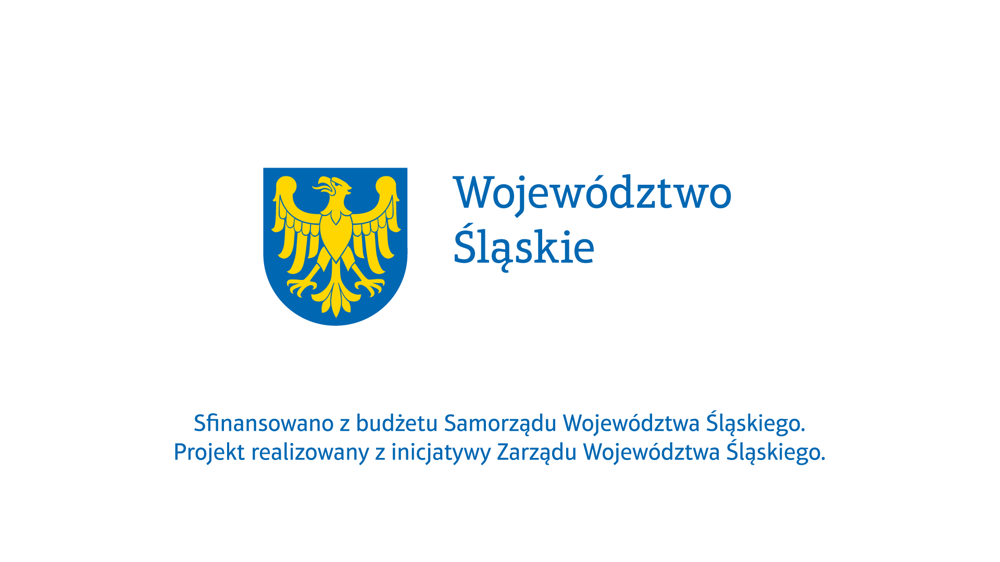

Przerwij ciszę
Powiedz to bez szeptu. Dziesięć warsztatów o emocjach, relacjach i sile proszenia o pomoc.
Bezpieczna przestrzeń do rozmowy o tym, co trudne.
„Przerwij ciszę. Powiedz to bez szeptu" to inicjatywa Fundacji Bez Szeptu, której celem jest wzmacnianie zdrowia psychicznego młodzieży oraz budowanie otwartej, bezpiecznej przestrzeni do rozmowy o emocjach i codziennych wyzwaniach.
Poprzez warsztaty, wspólne działania i spotkania z ekspertami uczymy, jak rozpoznawać emocje, skutecznie się komunikować, wzmacniać poczucie własnej wartości i szukać wsparcia. Zapraszamy młodzież 12–18 lat oraz ich rodziców i opiekunów.
Zapisz się na warsztaty
Rozpoznawanie i nazywanie emocji
Malowanie, kamienie, kolory. Emocja dostaje nazwę i kształt — łatwiej o niej mówić.
Praca z dziećmi w Zabrzu
Wychodzimy tam, gdzie są dzieci. Rozmowa, zabawa, zaufanie — bez oceniania.
Komunikacja bez przemocy
Mówić o swoich potrzebach, nie ranić. Słuchać, nie oceniać. Konflikt bez przegranych.
Poczucie budowania własnej wartości
Spacer, muzyka, wspólny czas na trawie. Zauważyć siebie i to, co porusza.
Wkrótce uzupełnimy szczegóły.
Dezinformacja — jak szukać prawdy
Wojtek z Klubu Odkrywców Świata o tym, jak fałszywe informacje grają na emocjach i jak się przed tym bronić.
Pierwsza pomoc — kiedy i jak sobie pomóc
Konkretne skille, nie teoria. Jak reagować, gdy liczy się każda minuta.
Wkrótce uzupełnimy szczegóły.
Zrobione rękami — rękodzieło i uważność
Wazony, kolory, faktura. Głowa odpoczywa, kiedy ręce pracują.
Zadbany i zdrowy fundament dla całej rodziny
Sen, ruch, jedzenie, rozmowa. Codzienne podstawy, na których stoi zdrowie psychiczne — dla dzieci i dorosłych.
Zapisz się